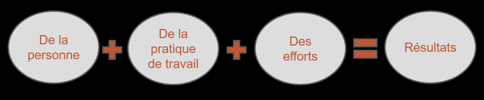

Les quatre formes de reconnaissance (Brun et Dugas)
Table des matières
L'essentiel : Les chercheurs québécois Jean-Pierre Brun et Ninon Dugas distinguent quatre formes de reconnaissance au travail : existentielle (de la personne), de la pratique (du comment), de l'investissement (de l'effort) et des résultats (du quoi). La reconnaissance, ce n'est pas juste « dire merci » : c'est un système qui valorise quatre dimensions différentes du travailleur. Beaucoup d'organisations se concentrent sur une seule (les résultats) et oublient les autres.
Cadre
Modèle développé par Jean-Pierre Brun et Ninon Dugas (Université Laval, Chaire en gestion de la santé et de la sécurité du travail) à partir de recherches sur les pratiques de reconnaissance dans les organisations québécoises.
Apport principal : la reconnaissance est multidimensionnelle. Concentrer ses efforts sur un seul registre (souvent : la performance et les résultats) laisse d'autres besoins de reconnaissance non satisfaits. C'est ce qui explique pourquoi des employés bien rémunérés peuvent quand même se sentir « pas reconnus ».
Les quatre formes
| Forme | Ce qu'elle reconnaît | Exemples concrets |
|---|---|---|
| Existentielle | La personne, son humanité | Saluer le matin, demander des nouvelles, retenir les noms, considérer la personne au-delà du rôle |
| De la pratique | Le « comment », la manière de travailler | Souligner la qualité du travail, le savoir-faire, les méthodes, l'expertise |
| De l'investissement | L'effort, l'engagement, la persévérance | Reconnaître les heures fournies, l'attitude, l'engagement, indépendamment du résultat |
| Des résultats | Le « quoi », ce qui est livré | Souligner les objectifs atteints, les performances, les contributions mesurables |

Toucher l'image pour l'agrandir*Schéma synthétique : Personne + Pratique + Efforts = Résultats.
Pourquoi les quatre comptent
| Forme | Risque si oubliée |
|---|---|
| Existentielle | Le travailleur se sent invisible, déshumanisé |
| Pratique | Le savoir-faire n'est pas valorisé, démotivation des experts |
| Investissement | Frustration quand les efforts ne sont pas reconnus, surtout si les résultats tardent |
| Résultats | Sentiment que la performance ne paie pas |
Lien avec les modèles de stress : voir Modèle de Siegrist, déséquilibre efforts récompenses. La reconnaissance est l'une des trois récompenses fondamentales selon Siegrist (avec salaire et perspectives).
Coût d'absence de reconnaissance : démotivation, désengagement, augmentation de l'iso-strain (✅Iso-strain), absentéisme, roulement, lésions psychologiques.
Application en mines
Application des quatre formes en milieu minier
| Forme | Exemple concret en mine |
|---|---|
| Existentielle | Le contremaître connaît les noms et la situation familiale des travailleurs, salue chaque shift |
| Pratique | Souligner devant les pairs la manière dont un foreur a réglé une situation difficile en sécurité |
| Investissement | Reconnaître l'effort d'un aide-foreur qui se forme pour devenir foreur, indépendamment du résultat final |
| Résultats | Tableau d'honneur des records de production sécuritaire, primes liées à la performance |
Pratiques structurantes
| Niveau | Action |
|---|---|
| Quotidien | Conversations informelles, attention portée à chaque travailleur |
| Hebdomadaire | Reconnaissance dans les rencontres d'équipe, retour sur les bons coups |
| Mensuel | Tableau d'honneur, reconnaissance publique |
| Annuel | Programme structuré (anniversaires de service, prix d'excellence sécurité) |
| Continu | Politique formelle de reconnaissance, formation des cadres |
Erreur classique : limiter la reconnaissance à des événements ponctuels (gala annuel) au lieu d'en faire une pratique quotidienne intégrée à la supervision.
Documents et outils
| Document | Type | Source |
|---|---|---|
| Brun, J.-P. & Dugas, N. (2005). La reconnaissance au travail | Article | Chaire CGSST, Université Laval |
| Guide CGSST sur la reconnaissance | cgsst.com | |
| Outils d'évaluation des pratiques de reconnaissance | À élaborer | RH, conseiller SST |
| Programme de reconnaissance modèle | Gabarit | Adapter selon culture |
Voir le centre de ressources : 📁 Documents et outils.
Pour aller plus loin
Références
- Brun, J.-P. & Dugas, N. (2005). La reconnaissance au travail, analyse d'un concept riche de sens. Gestion, 30(2), 79-88.
- Brun, J.-P. (2008). La reconnaissance au travail. Chaire en gestion de la santé et de la sécurité du travail, Université Laval.
Articles wiki connexes
- Modèle de Siegrist, déséquilibre efforts récompenses
- Pratiques de reconnaissance pour superviseurs������������������������������������������������������
Pages qui pointent ici (9)
- 📖 Glossaire SST psychosociale
- 🔤 Index alphabétique des articles SST psychosociale
- Norme CSA Z1003-13 SST psychosociale
- Politique de reconnaissance au travail SST psychosociale
- Pratiques de reconnaissance pour superviseurs SST psychosociale
- Reconnaissance et déséquilibre efforts récompenses SST psychosociale
- Reconnaissance et Motivation SST psychosociale
- Reconnaissance et Motivation SST psychosociale
- Sens du travail et engagement SST psychosociale